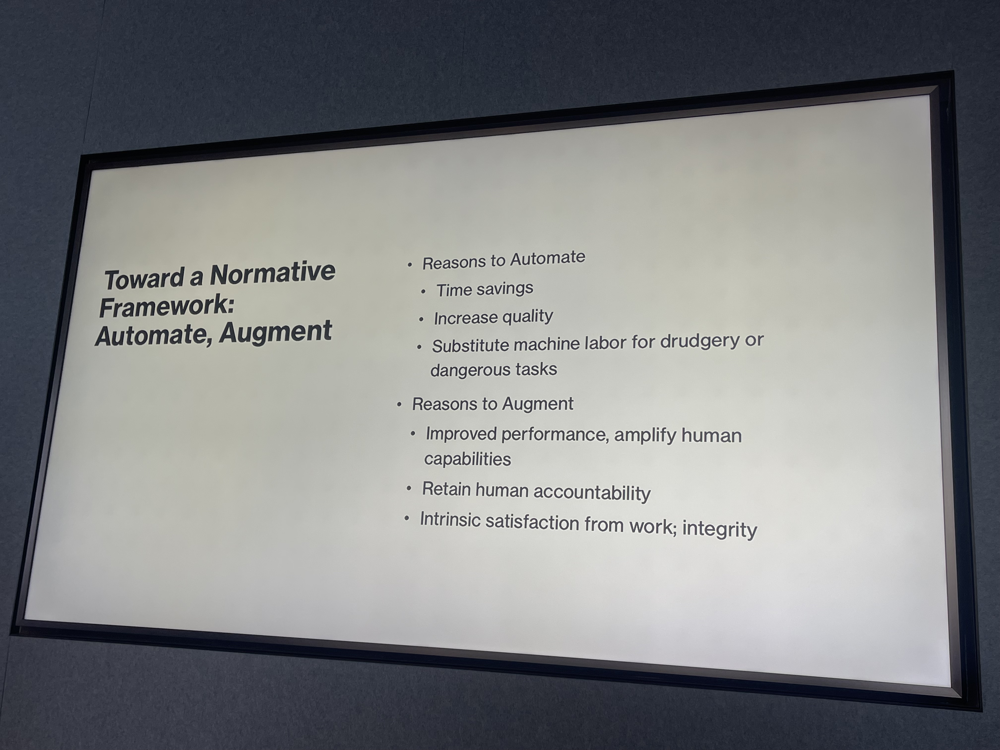

Signal Brief is a TrueSight DAO series compiling Pareto-filtered observations across the ecosystems the DAO is in steady contact with. The voice is institutional — no single contributor — and each entry is a pointer to a real signal that has cleared the filter. Field Signals is its sibling series for first-person essays.

A single pattern is surfacing in parallel across five ecosystems the DAO observes: retail-of-objects is collapsing while experience is rising. The thesis lives in the companion essay, The Mycelial Economy. What follows is the evidence behind it, organized by source.
From the wider culture
The kind of content the algorithm is rewarding right now points in one direction — tactile, hand-held, place-rooted skill:
Turning acorns into tortillas — a foraged staple processed by hand.
How to forage — re-learning what's edible in the immediate landscape.
How to make chocolate truffles — confection as ritual, not factory.
The audience for these is large, growing, and actively algorithm-promoted.
From the nomadic circuit
The Skooliepalooza-style traveling community — schoolies, festival nomads, the people who organized their lives around stepping out of the formal economy — is publishing the long-form how-to material for the same skills the wider culture is consuming. The cacao-bean-to-hot-chocolate workflow in current circulation was filmed at Skooliepalooza. This circuit is also the strongest concentration of anti-AI sentiment in the DAO's network.
From the library and community-workshop layer
June Jo is taking her bibimbap workshop on a national library tour — next stop the San Francisco Public Library on May 9. Libraries are paying for the experience to be made available to their communities. The model is portable enough that a single human can roadshow it across the country, library by library.
From the founder ecosystem
FounderHaus's FounderShip event drew enough resonance on its first run to merit a second annual edition. Founders are paying for time spent in a room with other founders — not for content that could just as easily be a podcast.
From supply-chain partners
Val Lapidus and his team are brewing beer using cacao nibs and cacao molasses sourced from the farmers the DAO supports — the imported good is the substrate, the brew night is the experience. Sheila and Ketan are bringing holistic incense from India and showing how it threads into intentional daily life — the substance crosses the border, but the practice around it is what people are coming for.
The shape of it
Across all five ecosystems, the same shape: the imported object is the substrate, the human-held practice around it is the value. Rice and gochujang at the library. Cacao bean at the brew night, or at Skooliepalooza. Incense stick at Sheila and Ketan's table. Founder time around a shared meal. The object is necessary but not sufficient. The experience is where the meaning — and increasingly, the margin — lives.
The reading frame
The frame for where AI belongs in this comes from Rob Reich's recent Stanford talk on AI and the Future of Work: Automation or Augmentation, which surfaced two relevant data points. First, public approval of AI is currently polling lower than public approval of ICE — a remarkable position for an entire industry. Second, Reich's normative frame distinguishes reasons to automate from reasons to augment:

Read against the five ecosystems above: the wave of AI-flavored startups is selling almost entirely from the automate column. Every flourishing experiential ecosystem only has appetite for the augment column. The full discussion is in The Mycelial Economy.
Read the essay for the thesis. Read this brief for the receipts. Send both to anyone in tech who is still selling from the automate column.